行前须知
以「体育场路18号」酒店为每天的出发与返回点。市区优先地铁 + 打车，青山湖按地铁/打车往返。
🌧 天气与心态
这几天有雨。西湖、灵隐雨中烟雾最出片；青山湖以户外为主，雨大时走室内/茶室备选。出发前一晚再看天气微调。
🎒 装备
轻便雨衣 + 折叠伞、防滑鞋、备用袜子；出片穿亮色纯色衣服（红 / 白 / 姜黄最跳色），手机/相机带防水袋。
🚇 市区交通
酒店步行即到武林广场站（地铁 1/2/3 号线）。去西湖、灵隐打车 15–25 分钟即达，雨天首选打车。
⏱ 节奏
每天 11:00 出发，不赶早；景点排得松，留足拍照与吃饭时间，雨天慢慢逛更舒服。
抵达当晚 · 武林广场周边热身
就近吃喝逛，大多有屋檐 / 商场可躲雨，不安排远途。
第 1 天 · 灵隐寺 + 西湖北线 + 傍晚手划船
景点集中在西湖西 / 北一带，雨中烟雾意境最佳，是全程最出片的一天。
DAY 1 11:00 出发 · 体育场路18号飞来峰 · 灵隐寺
酒店打车约 25 分钟。先买飞来峰景区门票进景区，想进灵隐寺要在里面再单独买「香花券」（两张分开）。雨天古木参天、香烟缭绕，飞来峰石窟造像非常有氛围。游览约 2–2.5 小时。
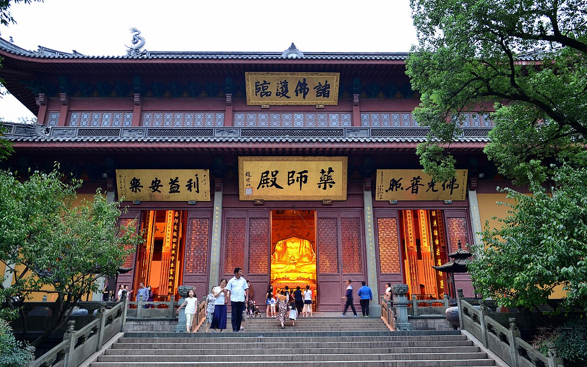
午餐 · 灵隐路一带
景区周边素斋或杭帮菜，简单吃。也可稍后回市区吃正餐。
西湖北线漫步 · 断桥 → 白堤 → 孤山
打车到北山街·断桥，开始步行：断桥残雪 → 白堤 → 平湖秋月 → 孤山（西泠印社）→ 曲院风荷。白堤一线雨雾里看湖最经典，沿途多树荫廊道，适合慢拍。
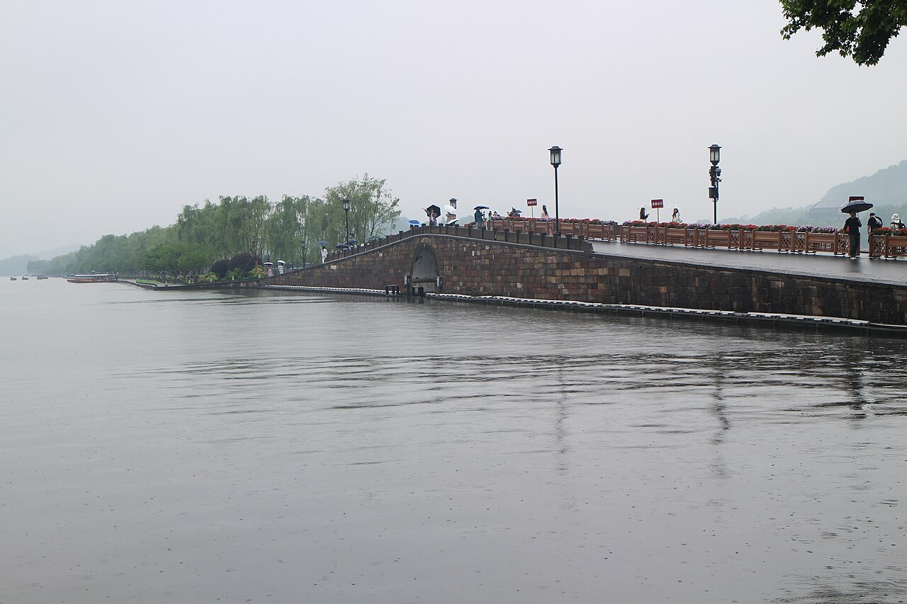
西湖手划船 · 傍晚出片
平湖秋月 / 楼外楼码头可坐手划船（船夫摇橹，约 ¥150/小时/船），配雷峰塔、苏堤背景拍人像最经典；不想自己晃船也可坐三潭印月大游船登小瀛洲。注意：西湖不允许自划皮划艇，皮划艇留到青山湖。
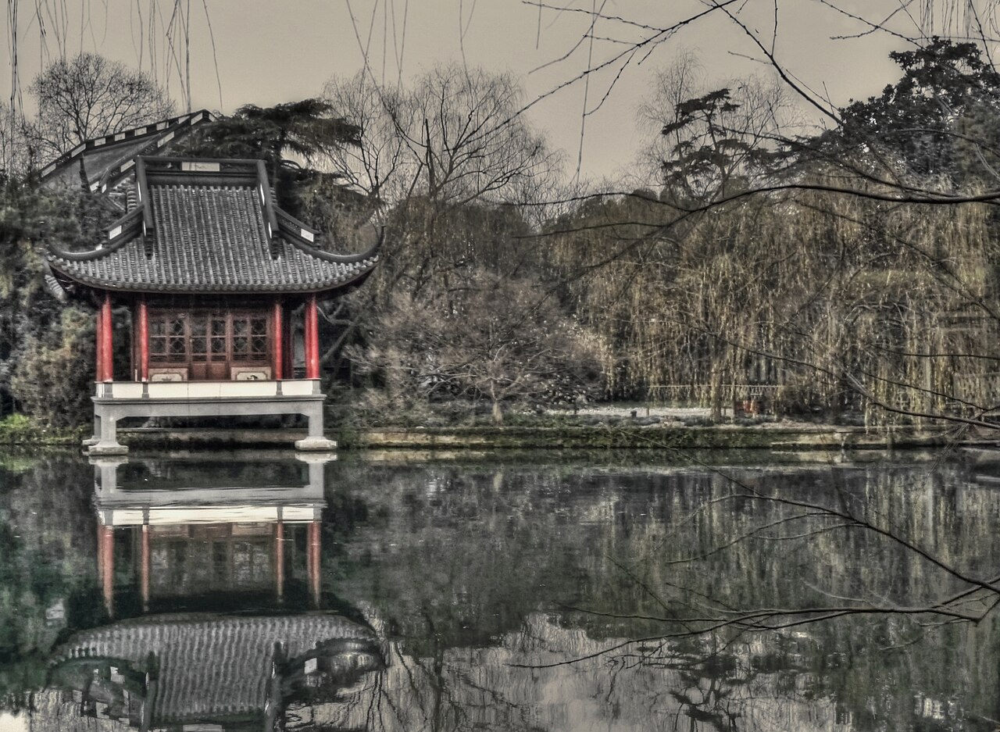
第 2 天 · 青山湖水上森林（划船出片主打）
人称「杭州抹茶森林」——临安区青山湖街道，杭州西郊约 50km。成片池杉长在抹茶绿水里，划皮划艇 / 桨板穿行林间，是杭州划船出片的天花板。雨天雾感「林深时见鹿」，更出片。
实用信息参考小红书近期实拍笔记；价格 / 开放时间以景区当日公告为准。
DAY 2 11:00 出发 · 体育场路18号怎么去（二选一）
① 打车 / 网约车（最省心）：酒店直接打到「青山湖水上森林」景区门口，约 1–1.5 小时，¥120–160。
② 地铁（最省钱）：武林广场站 → 换 5 号线到「绿汀路」→ 换 16 号线（杭临线）到「青山湖站」D 口，约 1.5–2 小时；出站有公交/接驳车到景区门口，很方便（也可打车 10–15 分钟直达）。
先确认开放 → 选皮划艇 / 桨板 / 游船
到售票 / 租船处先问当天是否开放划船（雨太大或打雷会停划），再决定项目。抹茶绿水面上池杉成排泡在水里，倒影 + 雾气，划进林间随手成片。划船单人艇约 ¥120/时、双人约 ¥220/时。
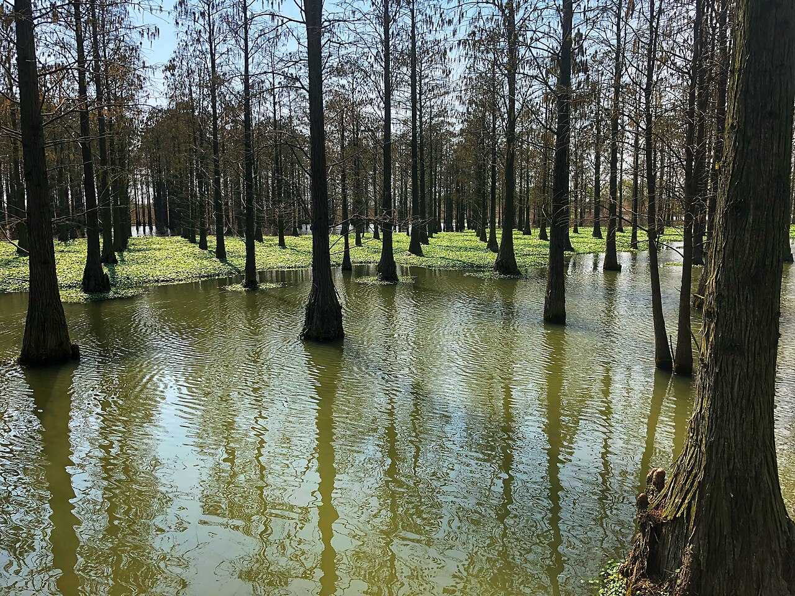
机位顺序 & 穿搭
① 林间水道穿行（主图）→ ② 树影倒影处定点拍 → ③ 岸边栈道全景。穿亮色纯色衣服（红 / 白 / 姜黄），与绿水池杉对比最跳色。
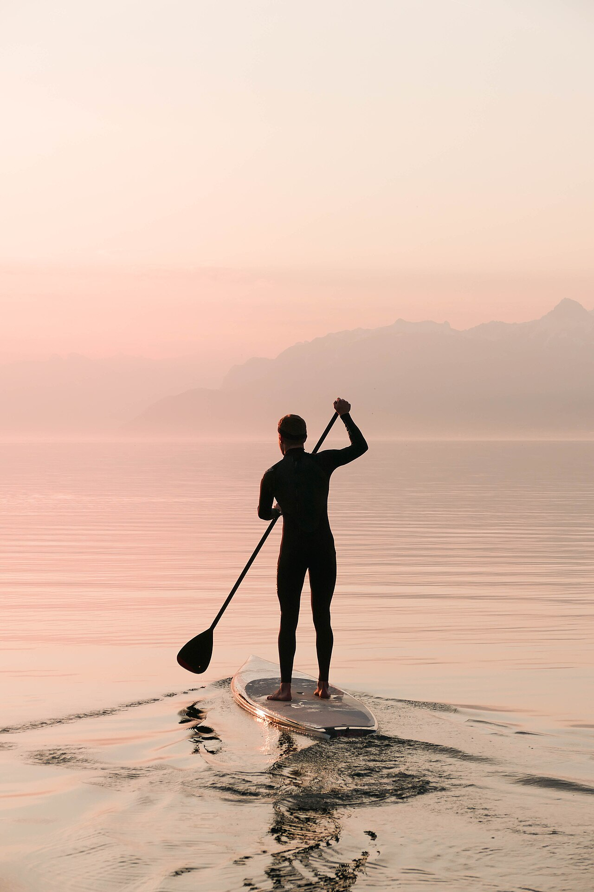
午餐 + 青山湖绿道
景区 / 临安城区农家菜（天目笋干、临安山核桃、土鸡）。划完有余力可在青山湖绿道租车骑行一段，环湖绿道也很出名。
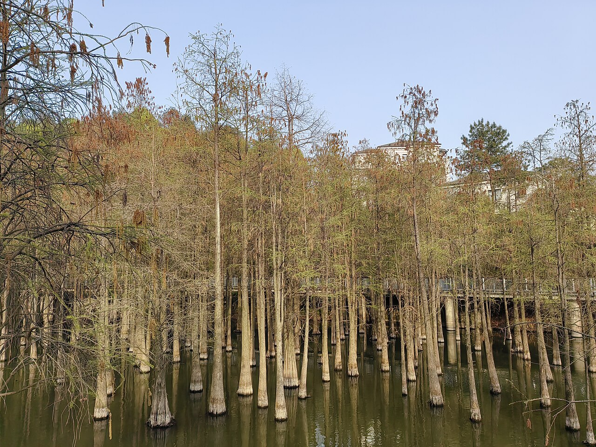
出片机位精选
按出片效果排序，雨天 / 雾天往往更有氛围。
青山湖水上森林
抹茶绿水面 + 池杉林，划船穿行倒影雾气，大片随手出；雨天「林深时见鹿」更绝。穿亮色衣服最跳色。
（图为水杉水林意境示意）
断桥 · 白堤
雨雾里的白堤一线，远山如黛、湖面空蒙，最有江南水墨味，人少时段更出片。
西湖手划船 · 苏堤背景
摇橹小船配苏堤 / 雷峰塔，坐船回望拍人像非常出片，傍晚光线柔和。
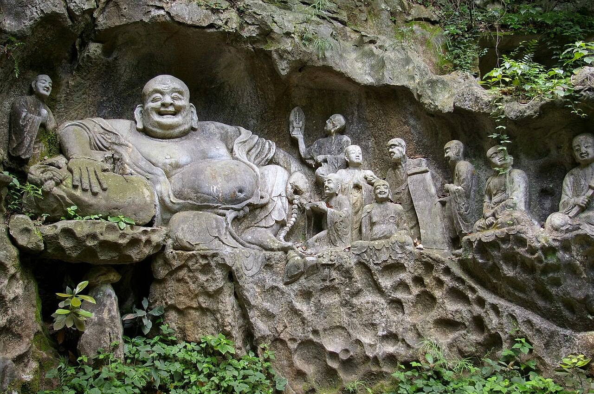
灵隐 · 飞来峰石窟
古木 + 香烟 + 山岩造像，雨天雾气下禅意十足，竖构图拍人或拍景都好。
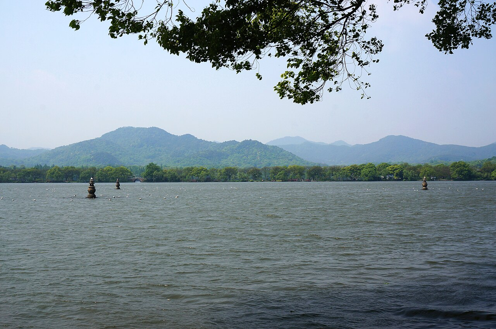
三潭印月 · 九曲桥
坐游船登小瀛洲，九曲桥、亭台与三座石塔，构图层次丰富。
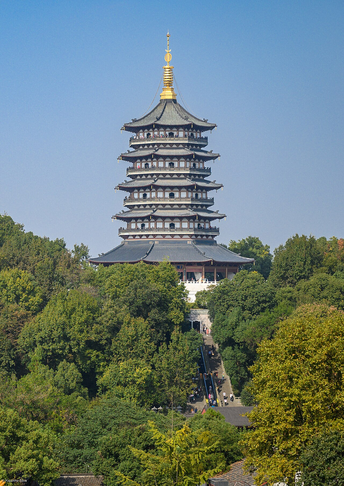
雷峰塔
有电梯可登塔，俯瞰全湖与苏堤；傍晚「雷峰夕照」最美，雨天室内也能拍。
好评美食推荐
杭帮经典 + 高人气老字号，按行程顺路安排。
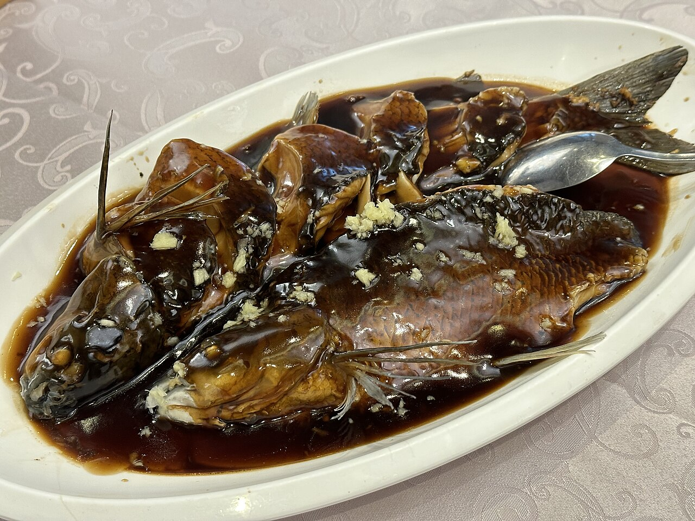
西湖醋鱼 ★★★★☆
杭帮头牌，酸甜清鲜，草鱼现做。
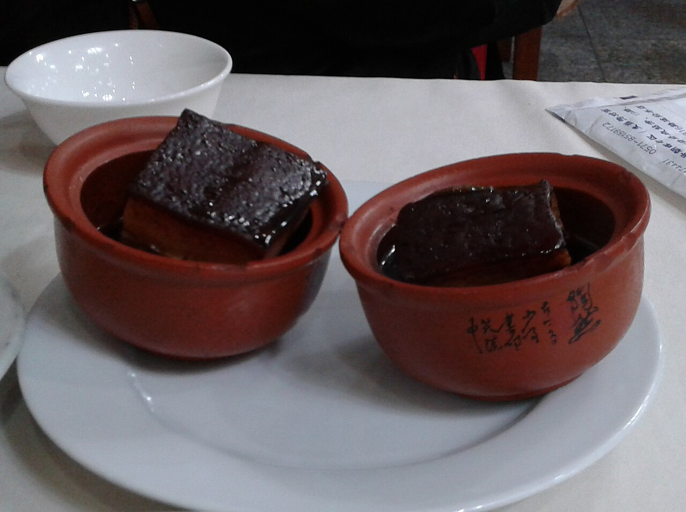
东坡肉 ★★★★★
红亮酥糯、肥而不腻，必点经典。
龙井虾仁 ★★★★☆
虾仁配龙井茶，清雅鲜嫩，杭州名菜。
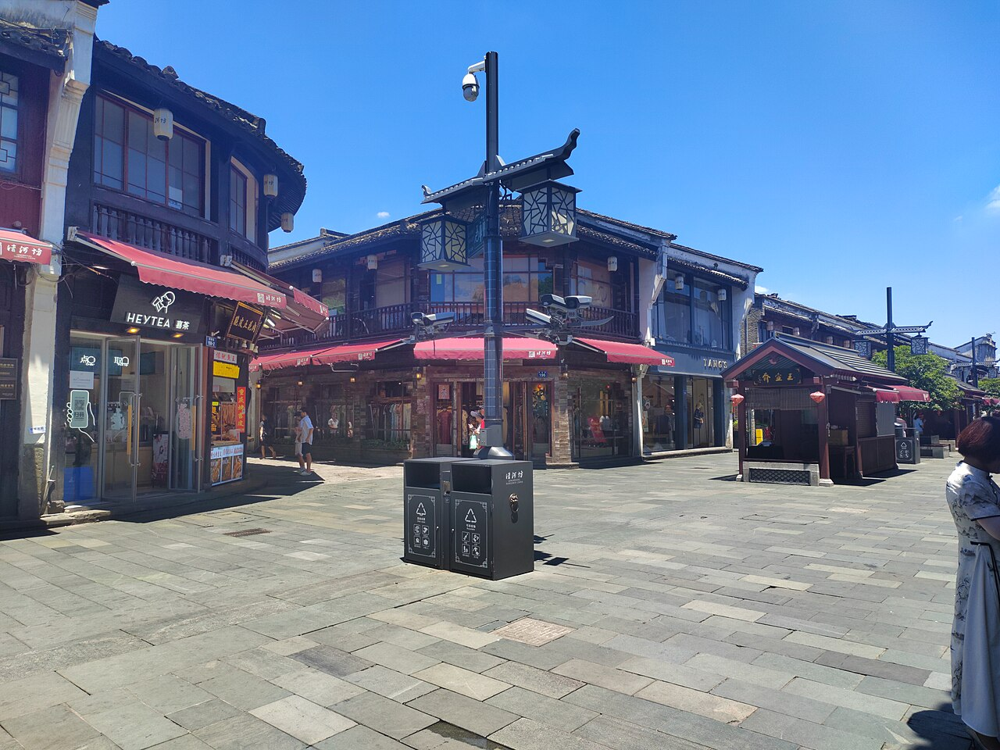
知味观点心 ★★★★☆
猫耳朵、小笼、片儿川，平价好吃接地气。
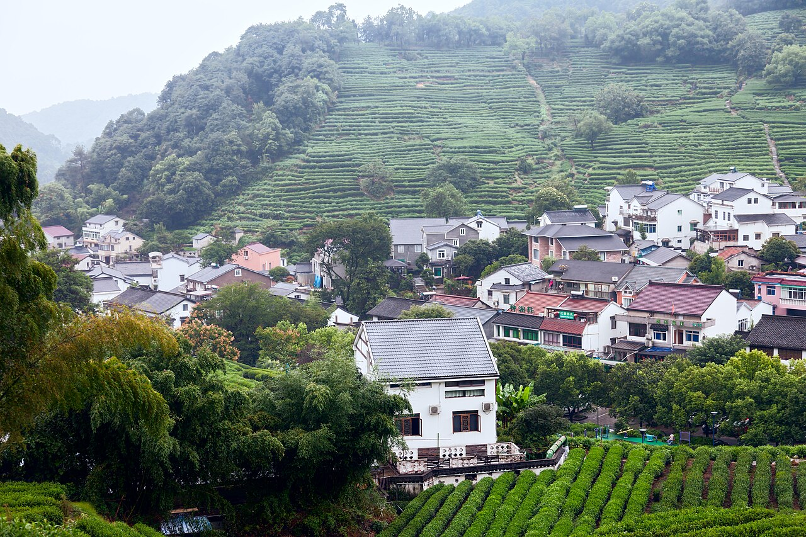
临安山货 ★★★★☆
天目笋干、山核桃、土鸡煲，青山湖一带农家菜。
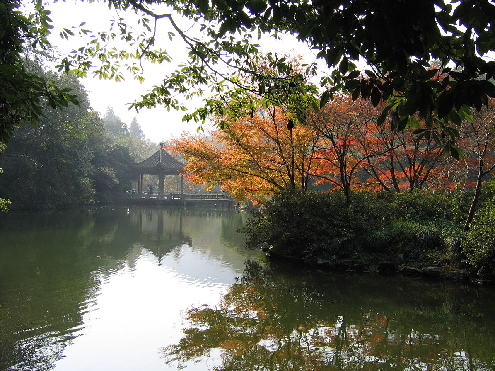
运河夜宵 ★★★★☆
胜利河美食街、大兜路，小吃与本帮菜云集，可躲雨。
备选 & 加分景点
雨太大或想替换青山湖时的好选择，也都很出片。
九溪烟树 / 龙井村
雨天茶园云雾缭绕，超出片，可整段替换青山湖，离市区约 30 分钟。
杨公堤 / 茅家埠 / 浴鹄湾
西湖西侧最幽静一段，人少景好，适合慢拍。
河坊街 + 南宋御街
古街小吃，有屋檐可躲雨；可顺游胡雪岩故居。
西溪湿地
摇橹船穿行芦苇水道，绿意 + 倒影出片，半天可玩。
中国茶叶博物馆（龙井）
雨天茶山云雾很美，室内外结合，文艺出片。
小河直街 / 桥西历史街区
运河边老街，市井氛围佳，离酒店较近。